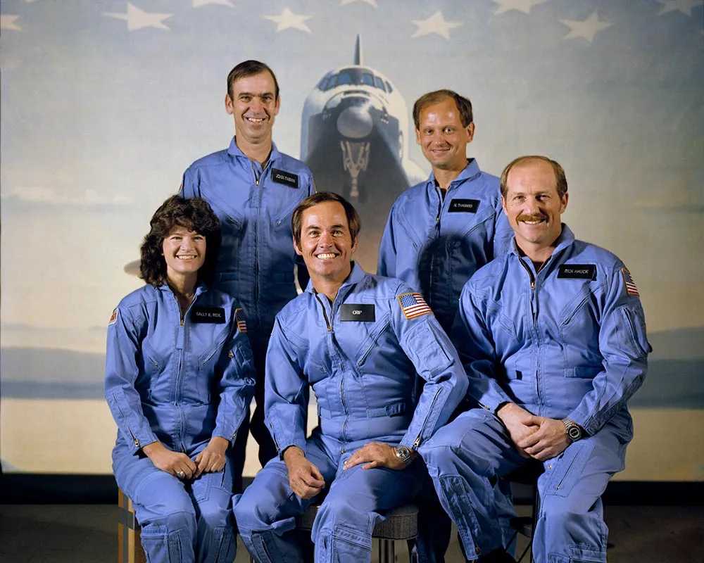
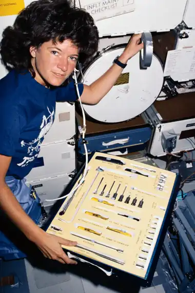
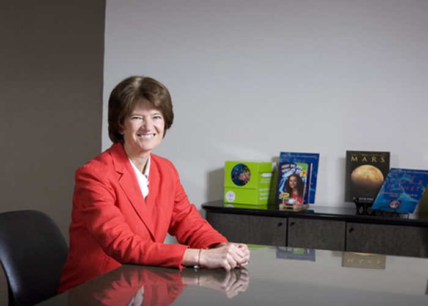

After completing astronaut training, the Class of 1978 astronauts became eligible for ground and flight assignments. Ride served as Capsule Communicator (CAPCOM) for STS-2 and STS-3 in late 1981 and early 1982, and became an expert in the use of the shuttle's robotic arm. On April 30, 1982, NASA announced that Ride would serve as a Mission Specialist on STS-7, a satellite deployment and retrieval mission on board the Space Shuttle Challenger. Her crewmates were Commander Robert L. Crippen, Pilot Frederick H. “Rick” Hauck, and Mission Specialist John M. Fabian. NASA added physician-astronaut Norman E. Thagard to the crew in January 1983 to conduct in-flight studies of space motion sickness, a condition that afflicted about one-third to one-half of all space travelers. Thagard's addition marked the largest crew flown in a single spacecraft to date.

During the six-day mission, the most complex in the shuttle program to date, the crew launched two commercial communications satellites, Anik C3 for Canada's Telesat and Palapa B2 for Indonesia. Ride used the Shuttle's robotic arm to deploy the first Shuttle Pallet Satellite (SPAS-01) and retrieve it two days later, the first time the Shuttle was used to return a spacecraft to Earth. The SPAS-01 satellite took some amazing photographs of Challenger as the two spacecraft flew in formation. Although originally planned to conduct the first shuttle landing at Kennedy Space Center, inclement weather in Florida forced a diversion to Edwards Air Force Base in California. Touchdown occurred June 24.
Ride's launch on STS-7 occurred almost to the day of the 20th anniversary of the launch of the first woman in space, Soviet cosmonaut Valentina V. Tereshkova. After the successful flight of Yuri Gagarin, the first man in space in April 1961, Soviet Chief Designer Sergey Korolyov had the idea of flying a woman in space. To find a suitable candidate, he looked outside the field of military pilots. Although piloting was not a requirement for the female candidates (the Vostok spaceship was more or less automated), parachuting was, because after reentry Vostok cosmonauts ejected from the capsule and parachuted to the ground separately. About 400 female candidates initially were screened and 40 were called to Moscow to undergo interviews and medical and other tests. Valentina Tereshkova was one of five women selected on Feb. 16, 1962.
This was the first flight to include two women, Ride and Sullivan. Sullivan was the first American woman to walk in space. The Earth Radiation Budget Satellite (ERBS) was deployed less than nine hours into the flight. The Office of Space and Terrestrial Applications-3 (OSTA-3) carried three experiments in the payload bay. Components of Orbital Refueling System (ORS) were connected, demonstrating it is possible to refuel satellites in orbit. Other Payloads were: Large Format Camera (LFC); IMAX Camera, flying for the third time; a package of Canadian Experiments (CANEX); Auroral Photography Experiment (APE); Radiation Monitoring Equipment (RME); Thermoluminiscent Dosimeter (TLD); and eight Get Away Specials.

Co-founded Sally Ride Science in 2001 with partner Tam O'Shaughnessy and colleagues to promote STEM (Science, Technology, Engineering, and Math) education and close the gender gap for girls and young students.

As a physicist and astronaut who had previously flown twice on Challenger, Ride quietly helped track down and supply critical technical data regarding how cold temperatures caused the solid rocket booster's rubber O-rings to become brittle and fail.
She discreetly shared O-ring and launch-temperature records with fellow commission member General Donald Kutyna (who then guided physicist Richard Feynman toward the famous ice-water O-ring demonstration) to protect her sources inside NASA from retaliation. This secret was kept until after Ride passed away in 2012.